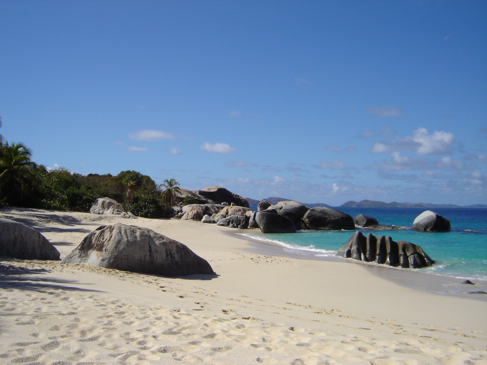
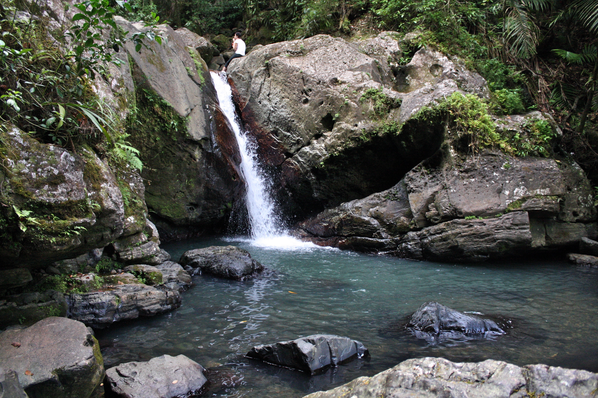
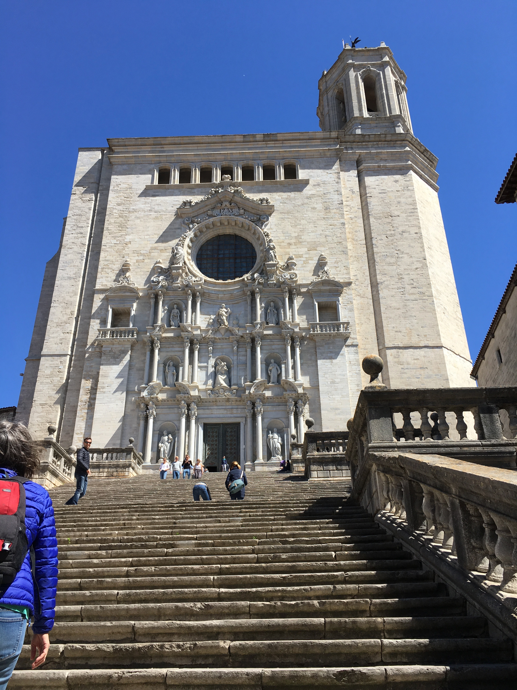
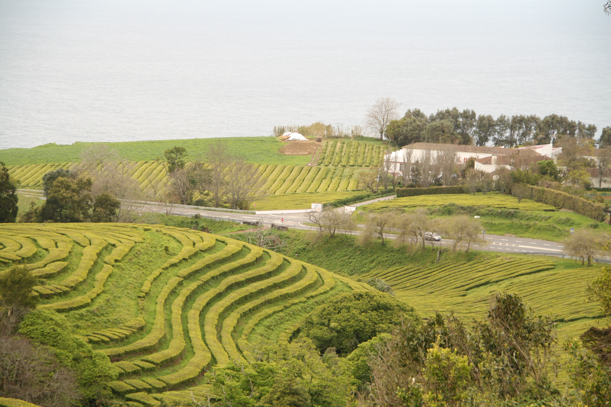

"Man cannot discover new oceans unless he has the courage to lose sight of the shore."
- Andre Gide
I was privileged to be able to travel to beautiful places growing up and I am incredibly thankful for the experience.
Some of my favorite places I have been are Virgin Gorda, Puerto Rico, Spain, Azores, and Iceland.
I would love to keep traveling for the rest of my life and possibly live in other countries.
Virgin Gorda
 The Baths National Park in Virgin Gorda is full of granite boulders that form pools. The rocks
almost appear man made, because the way they are arranged is picturesque.
Puerto Rico
El Yunque National forest is a rainforest home to a special frog called a coqui.
Coqui's get their name from the noise they make at night. El Yunque is the only tropical rainforest in the United States forest system.
Spain
Any "Game of Thrones" fans? Girona is a small city located in Catalonia, about an hour north
of Barcelona, where scenes from "Game of Thrones" were shot.

Girona Cathedral
Great Sept Of Baelor
Azores
 The Azores are a group of Portuguese islands in the Atlantic Ocean. When I visited the Azores
I went to Sao Miguel, which is the largest of the islands. On Sao Miguel there is a tea plantation,
and it is the only one in all of Europe.
Iceland
Iceland is one of the most extraterrestrial places I have ever been to. There are fields of lava
covered in green moss, and barely any trees. My favorite part of Iceland was its numerous waterfalls,
that ranged from a few feet to hundreds of feet high.